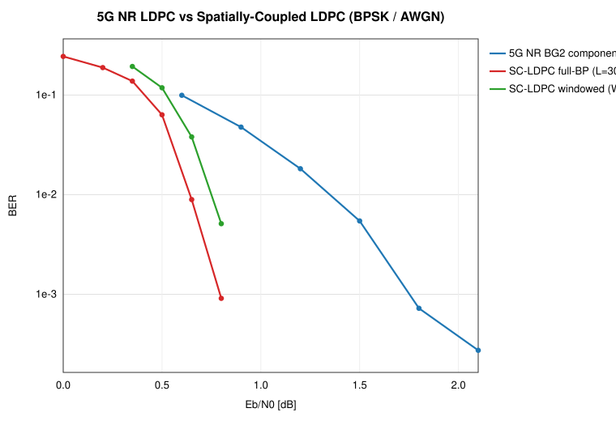
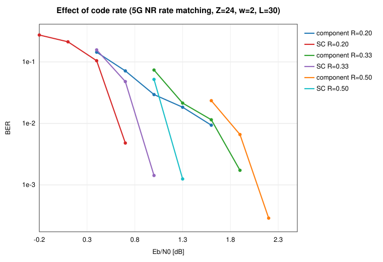
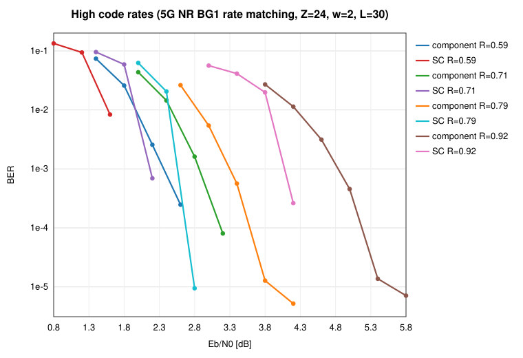
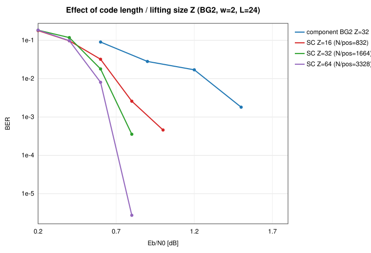
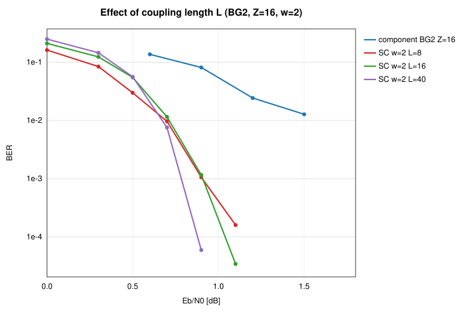
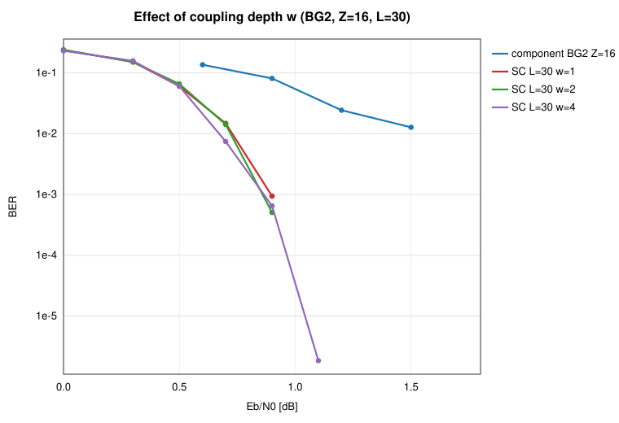
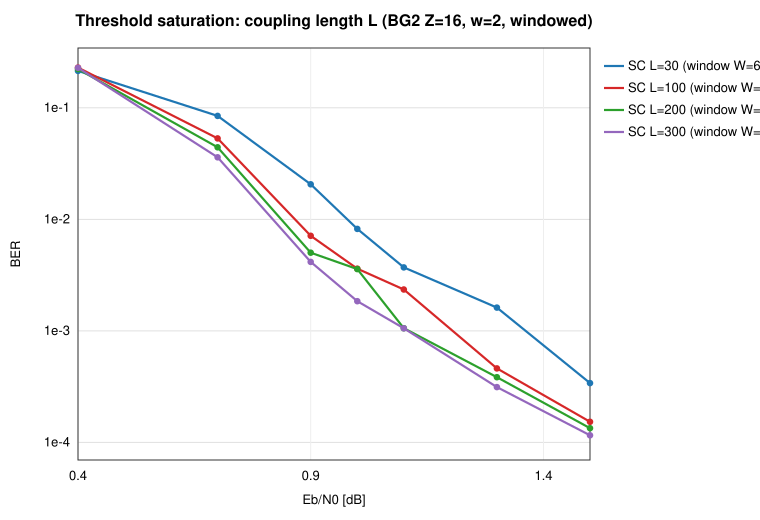
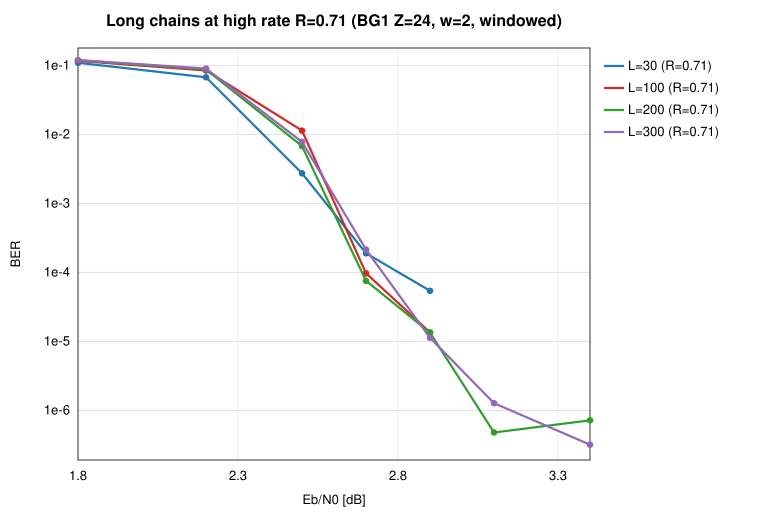
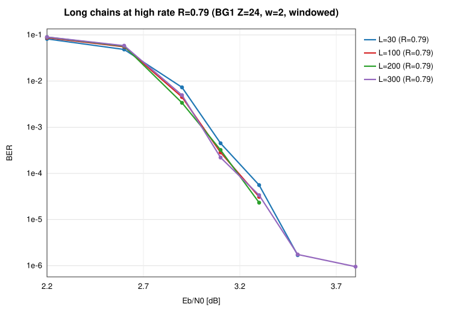
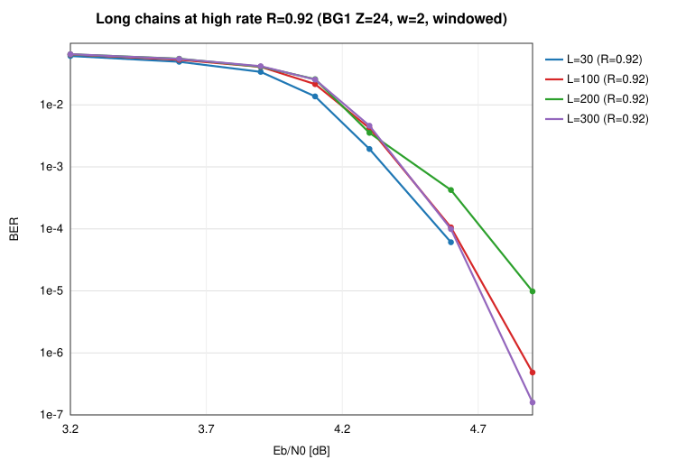

分量码为真实 3GPP TS 38.212 基图（BG2）；空间耦合采用系统位边扩展 + 终止，
全图置信传播译码。下列每图横轴 Eb/N0 [dB]，纵轴 BER（半对数）。

同样达到 BER≈8e-4：分量码需 ~1.8 dB，SC 仅需 0.8 dB → 耦合增益 ≈ 1.0 dB； 滑窗译码(W=8)以远低于 L 的时延逼近全图 BP。

码率（低/中，BG2） R∈{0.20,0.33,0.50}：每个码率 component vs SC， 耦合增益 ~0.9 dB 在各码率上一致保持。

码率（高，BG1） R∈{0.60,0.71,0.79,0.92}：BG2 上限约 0.83，故高码率改用 5G NR BG1（K_b=22）。瀑布随码率整体右移，耦合增益在高码率仍保持。

码长（提升尺寸 Z∈{16,32,64}）：Z 越大，瀑布越陡、错误地板越低 （有限长效应减弱）。

耦合链长 L∈{8,16,40}：L 越大，错误地板越低、阈值趋于饱和； 小 L 终止码率损失更大。

耦合深度 w∈{1,2,4}：w 越大耦合越强、瀑布越陡，但收益递减且码率损失增大。

大 L 下全图 BP 不可行（译码波需 O(L) 次迭代才能穿过链），故用滑窗译码器 （时延/复杂度 ~W，与 L 无关）。L 增大时瀑布收敛到一个极限——这就是阈值饱和： 超过某个 L 后再加长链不再改善门限（只继续消除已很小的码率损失）。

R≈0.70：高码率下随 L 增大的阈值饱和（各 L 曲线）。

R≈0.78：高码率瀑布更陡、整体右移。

R≈0.92：极高码率（仅核 4 行），观察大 L 是否仍能压低错误地板。
原始数据见 results*.json / results.csv；构造与方法见 README.md。